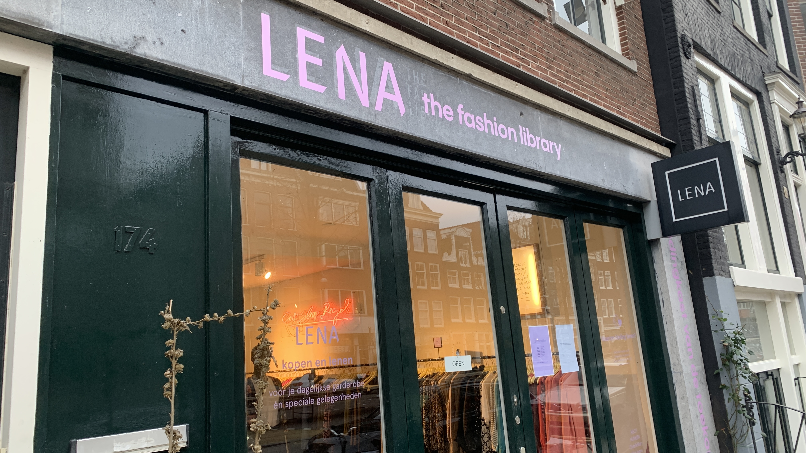

Home
Over Ons
Bij Rent, Don't Buy geloven wij in duurzame modekeuzes en het verminderen van kledingvervuiling. Onze missie is om mensen bewust te maken van de impact van hun kledingconsumptie op het milieu en tegelijkertijd alternatieven te bieden die zowel trendy als milieuvriendelijk zijn. Bij "Rent, Not Buy" geloven we sterk in het bevorderen van kledingruil als een duurzame oplossing voor het overmatig consumeren van kleding. Onze app is ontworpen om jou te inspireren en aan te moedigen om deel te nemen aan de kledingruilbeweging. We willen een gemeenschap creëren waarin het delen en ruilen van kleding wordt omarmd als een positieve stap naar een duurzamere toekomst. Ons team bestaat uit toegewijde individuen die gepassioneerd zijn over milieubehoud en mode. We geloven in de kracht van collectieve actie en willen onze gebruikers aanmoedigen om bewuste keuzes te maken die een positieve impact hebben, niet alleen op de planeet, maar ook op de manier waarop we ons kleden en consumeren. Sluit je ook aan bij onze beweging en ontdek de vreugde van kledingruil. Samen kunnen we een verschil maken en een meer duurzame modecultuur bevorderen. Welkom bij "Rent, Not Buy" - waar stijl duurzaamheid ontmoet!
Wat is kledingruil?
Wil je je kledingkast vernieuwen zonder je budget te overschrijden of het milieu te belasten? Dan is kledingruil misschien iets voor jou! Elk kledingstuk heeft een verhaal te vertellen, maar hoe vaak geven we kleding een tweede kans om te schitteren? In plaats van altijd maar nieuwe kledingstukken te kopen die snel uit de mode raken of na een paar keer dragen in de achterkant van je kast verdwijnen, waarom zou je niet deelnemen aan een duurzamere, leukere en sociaal bewuste manier van shoppen? Kledingruil is de perfecte manier om je stijl te verfrissen zonder een fortuin uit te geven. Het is een plek waar mode-avonturiers samenkomen om kledingstukken te delen, te ruilen en nieuwe looks te ontdekken. Door deel te nemen aan kledingruil verminder je niet alleen de druk op je portemonnee, maar verminder je ook de negatieve impact van de mode-industrie op het milieu. Denk aan de vreugde van het ontdekken van unieke stukken die anders misschien verborgen zouden blijven. Door te ruilen, geef je kleding een nieuw leven, verminder je afval en help je de cyclus van overmatige consumptie te doorbreken. Bij kledingruil draait het niet alleen om kleding; het gaat om het opbouwen van een gemeenschap van gelijkgestemde individuen die de waarde van hergebruik en duurzaamheid erkennen. Het is een kans om nieuwe mensen te ontmoeten, verhalen te delen en samen te werken aan een betere toekomst voor onze planeet. Dus waar wacht je nog op? Duik in de wereld van kledingruil en ontdek een schat aan stijlvolle vondsten die op je liggen te wachten. Laten we samen bouwen aan een meer duurzame en inclusieve modecultuur. Doe mee, ruil je kleding en laat je stijl stralen!